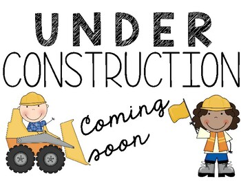

Plotting Relationships Between Variables

The EEB R Manual is the work of researchers at the University of the Toronto
and intended as a purely educational resource. It holds no official
association with the R Foundation. It should not be taken as an
authority on R best practices.
When using this resource,
This content is reviewed regularly for errors and to make improvements, if you see an error and want to help us make this better, see the Contact Page